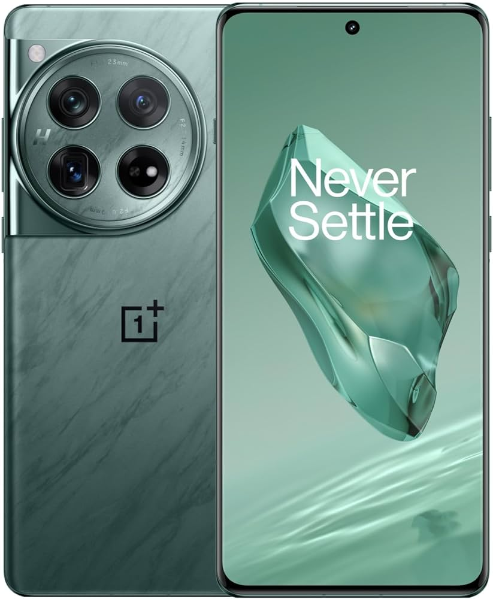

Article 1 |
Article 2 |
Article 3 |
|---|---|---|
| OnePlus Technology (Shenzhen) Co., Ltd. (Chinese: 一加科技; pinyin: Yījiā Kējì), doing business as OnePlus | OnePlus was founded by Pete Lau and Carl Pei on 1 6 December 2013 to develop a high-end flagship smartphone running Cyanogen OS th at would come to be known as the OnePlus One. | Pei would oversee the design and marketing of OnePlus' products until his departu re from the company in October 2020. |